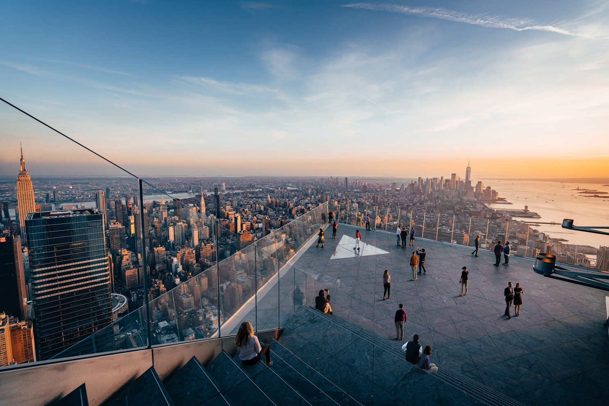
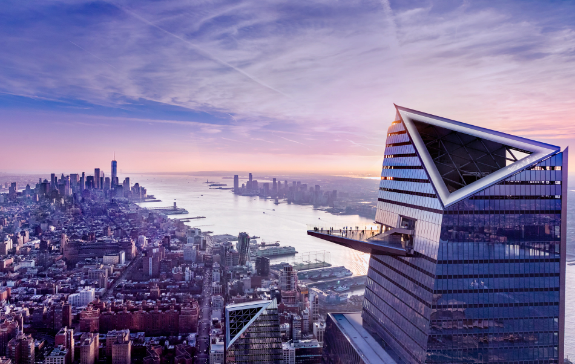

Edge NYC is one of the newest additions to the Manhattan observation decks. Hovering 100 floors above the city streets, this sky deck offers jaw-dropping views over Manhattan. Adding to the thrill is the glass floor, where you can peer down to the city streets far below.